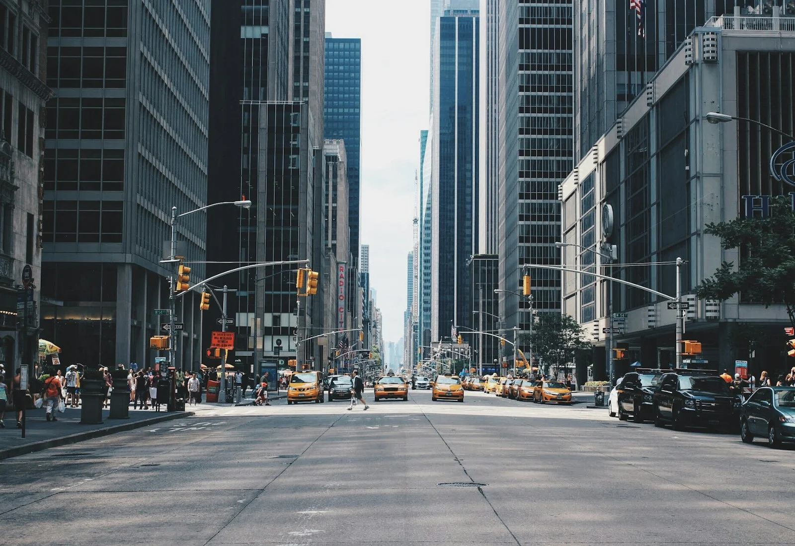

CONTACT
Start with a hello.
Please get in touch if you would like to discuss my work or share your feedback.
Email
Email address to be added
A contact email will be added before this portfolio is published.
What we can talk about
Thoughts on the work
Have a thought about a photograph? Include its title and collection, and share what caught your attention.
Projects and learning
For a course project or learning opportunity, share the topic, timing and what you would like to discuss.
